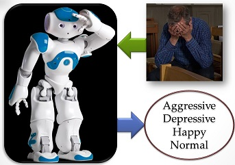
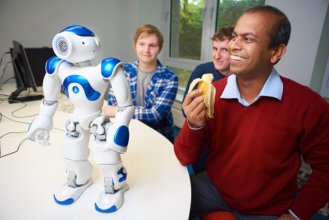

Dr Ardhendu Behera, Reader (Associate Professor) in Computer Vision and Artificial Intelligence
Department of Computer Science, Edge Hill University
Robot to Monitor Behavioural Symptoms in People with Dementia (PwD)

It has been appeared in BBC News, BBC Radio Lancashire (Graham Liver Breakfast Show),
The Times,
Daily Mail, The Sun,
Metro, Daily Mirror and many more
national, international and local newspaper.

University robots to improve the care of older people, patients and autistic children
 It has been appeared in That’s Lancashire TV (Channel 7), BBC Radio Merseyside, The Champion Newspaper (Ormskirk, Skemersdale), Lancashire Evening Post (LEP), Southport Visiter.